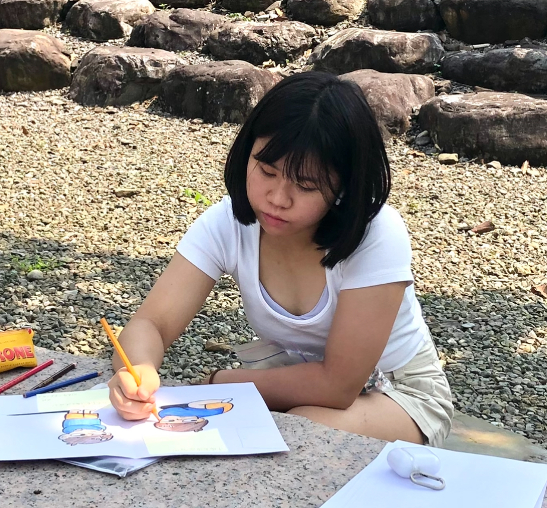

江婞安的作品集
自我映像 筆觸中的故事
我的素描自畫像，旨在以復古風格捕捉自我於時光中的映像創作過程中，我將背景融入山水畫元素，試圖在柔和的線條與厚重的筆觸間，呈現出山的質感與靈魂
葉下的探索 回到那童年時光
大自然的奇妙與童真的探索，透過這幅作品想讓觀賞者感覺出，在我們的成長過程中，往往會有許多挫折跟不安，但只要回想起自己的避風港，就能找到內心的平靜
星空夢語
描繪了一個坐在雲朵上的少女，手捧星星，象徵著她對夢想的守護與憧憬。背景中閃爍的星星和柔和的雲朵強化了作品的夢幻氛圍，表達出追逐夢想時的純真與美好
回家的路上
這幅畫展現了日常生活中匆忙的通勤場景，並透過妹妹戴著口罩、神情平靜的表情，表達了現代社會中的疏離感，意在營造出現實與內心世界的對比。
在那悠閒的午後
午後陽光灑落在綠意盎然的街景中，光影變化透過樹葉間的縫隙表達出一種寧靜祥和的氛圍，為靜謐的街道增添了一絲動態感讓人感受到自然與日常生活的美好交融
綻放的靜謐
以花為主題，透過色彩與光影表現生命的柔和與力量。希望觀者在欣賞作品時，能感受到片刻的平靜與溫暖，並思考生命的意義
09/30 作業詩詞配圖表格
10/07 作業旅行相片表格
11/04 作業個人資訊展示
12/16 作業地圖與影片嵌入
Bootstrap作品展示
綜合應用課程總結